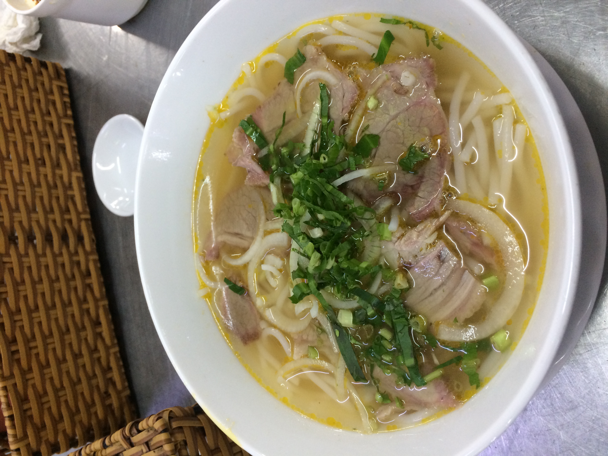
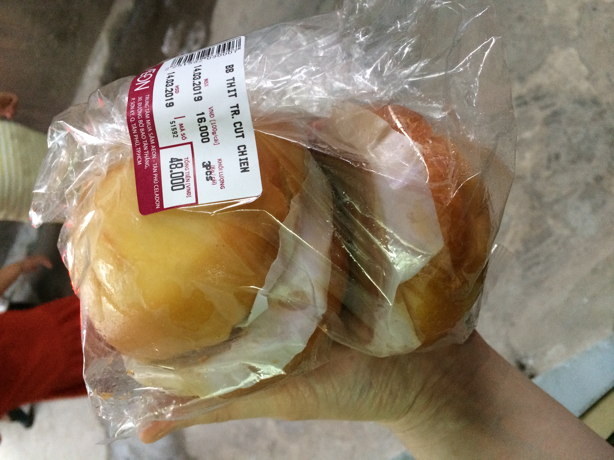
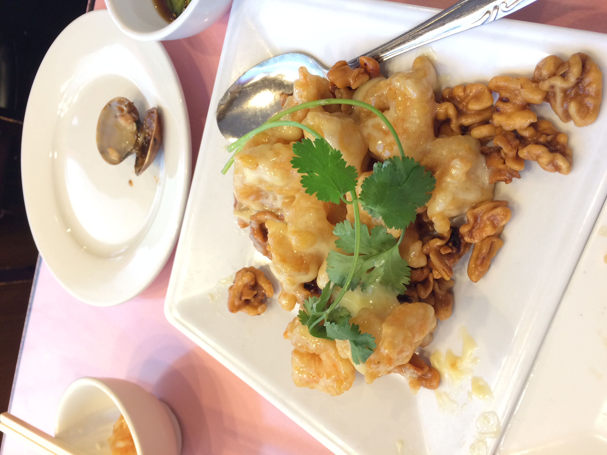
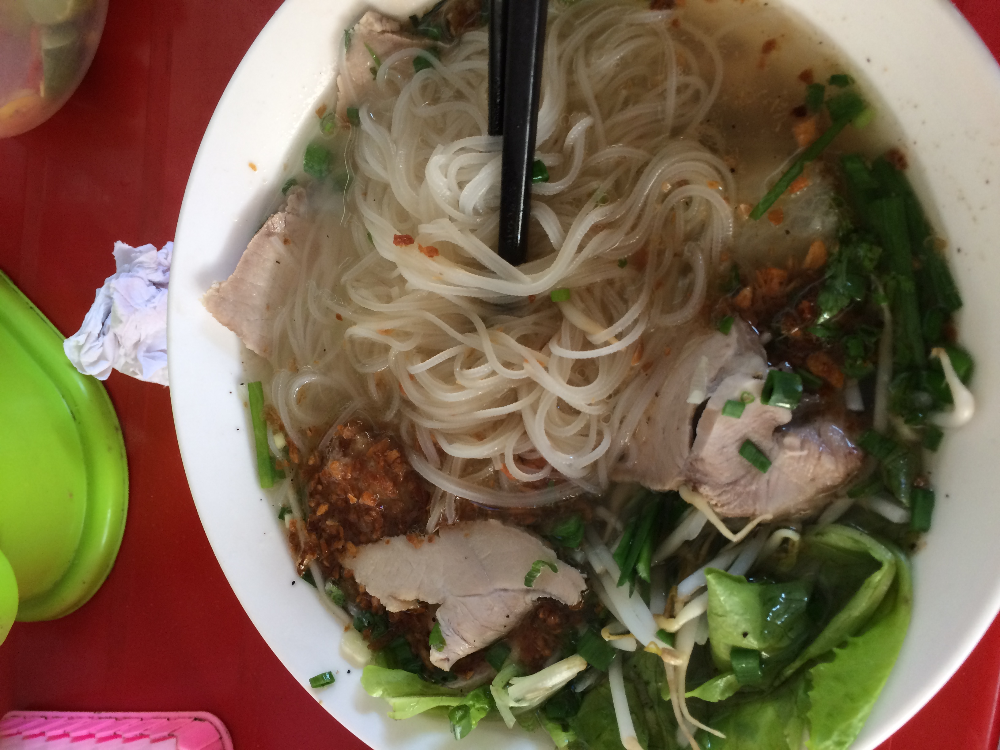
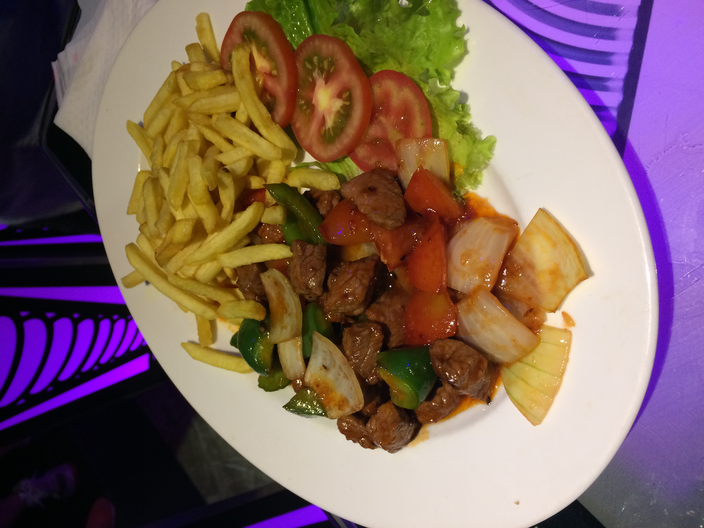
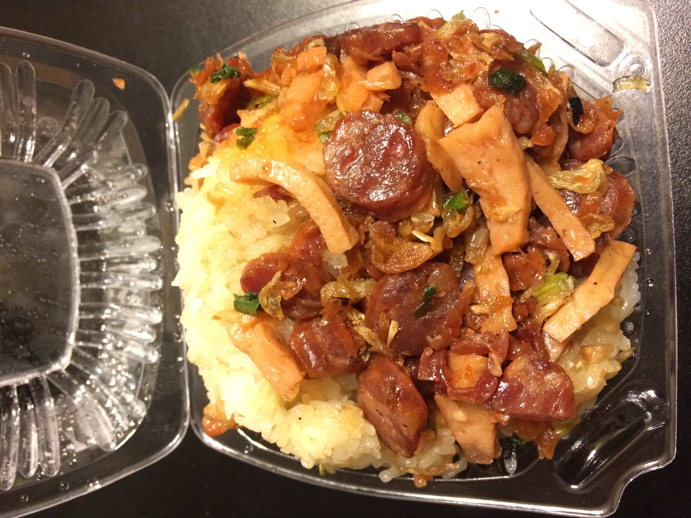
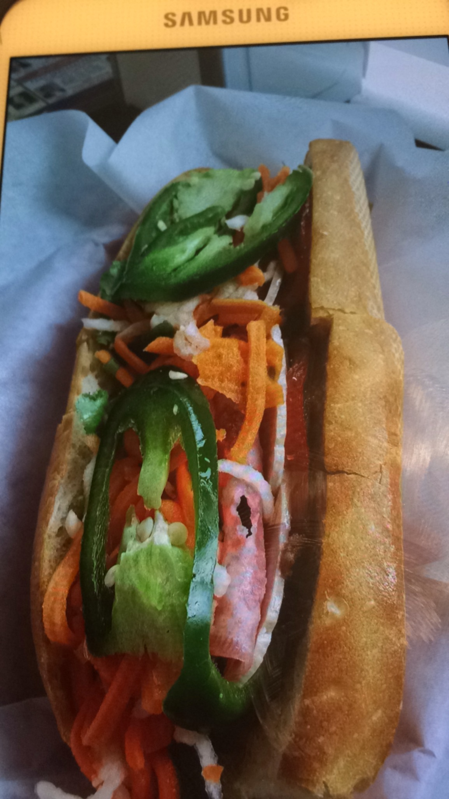
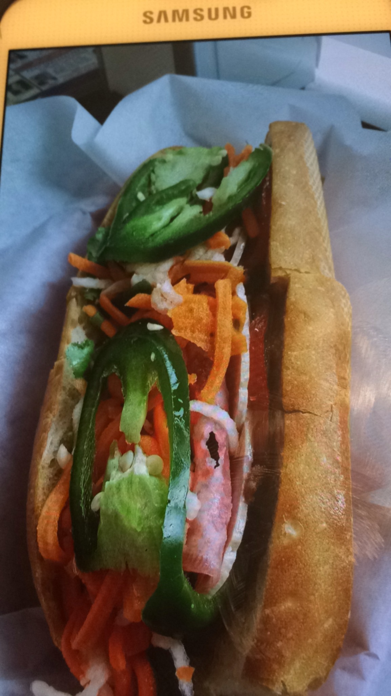

This hobby of mine is sure tasty.
When we were kids, my sisters loved to play with dolls and such, but not me. I'd rather waited for the snack sellers with karts that'd come by our street daily at noon and have my mother buy me a national favorite banh mi, a hot yummy bowl of banh canh, or a small bowl of pho. So much yumminesses of this hobby, I don't think I will break the tradition anytime soon.
      
